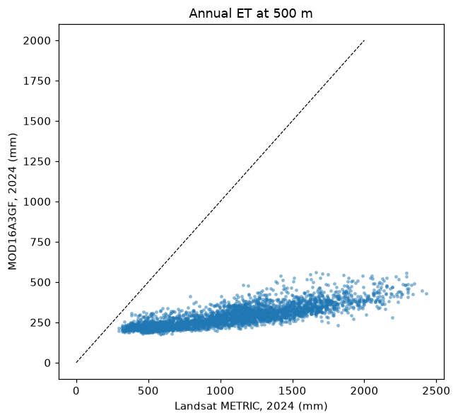
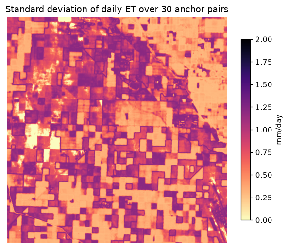

How Good Is the ET Map? Validation, Sensitivity and Uncertainty
An ET map looks convincing whether it is right or not. Before it is used to allocate water, it needs evidence: comparisons with independent measurements, checks against physical limits, and an estimate of how much each input and assumption could change the result. Flux towers are the usual reference, but they are few, they see a footprint of a few hectares, and their own energy balance rarely closes. This notebook builds the case for and against the METRIC results of the previous notebooks with what is available without accounts: a water balance check over unirrigated land, the MODIS MOD16 annual ET product, the choice of reference ET, one-at-a-time sensitivity of the inputs, the spread over many anchor pairs, and the spread between models. It ends with an uncertainty budget by crop and points to flux tower and OpenET comparisons for readers with free accounts.
Overview
Flux towers and their limits
Eddy covariance towers measure H and LE directly every 30 minutes. They are the reference for satellite ET, with three caveats:
Energy closure. At most sites H + LE adds up to only 70 to 90 % of Rn - G. Comparisons often correct the tower fluxes by distributing the residual in proportion to the Bowen ratio (seb.energy_closure measures the closure).
Footprint. A tower sees an upwind area of a few hundred metres that moves with the wind, so a comparison needs a footprint-weighted average of the satellite pixels.
Representativeness. Towers sit in uniform, well managed fields; satellite errors are larger at field edges and in mixed pixels.
The OpenET accuracy assessment (Volk et al. 2024) compared each of its models and the ensemble with 152 flux stations across the western United States. In short, the models captured croplands better than natural vegetation, the ensemble was among the most accurate estimates for croplands, and individual models were biased in different directions for different land covers.
Checks without towers
Physical limits. Annual ET of land that is not irrigated cannot exceed rain plus the water the soil can store. In a dry summer, bare fallow soil evaporates almost nothing. Exceedances measure bias at the dry end.
Independent products. MOD16 (Penman-Monteith at 500 m) uses a different principle and different inputs. Agreement is not proof, but large disagreements need an explanation.
Sensitivity and uncertainty. Perturbing each input and assumption, drawing many anchor pairs, and comparing models give the range within which the map is uncertain, even without a reference.
Validation with GeoLattice
Function
Purpose
seb.compare_to_tower(pred, obs)
bias, MAE, RMSE, R2, NSE, slope and intercept
seb.energy_closure(rn, g, h, le)
closure ratio of fluxes
seb.sensitivity(func, inputs, perturbations)
one-at-a-time sensitivity
seb.monte_carlo_anchors(run, candidates, n=)
spread over anchor pairs
seb.seasonal_et, seb.interpolate_etrf
seasonal totals with different reference ET
Learning objectives
Explain what flux towers measure and how energy closure and footprints affect comparisons.
Use a water balance to bound the bias of ET over unirrigated land.
Compare Landsat annual ET with MOD16 and explain the differences.
Quantify how the choice of reference ET changes seasonal totals.
Run one-at-a-time sensitivity on the METRIC inputs and see what the internal calibration absorbs.
Combine anchor, model and input uncertainty into a budget by crop group.
Data
Dataset
Content
Results of notebooks 06, 07 and 10
outputs/metric_20240705.nc, outputs/ensemble_20240705.nc, outputs/etrf_westside_2024.nc, outputs/annual_et_westside_2024.nc (recomputed by running those notebooks if missing)
Reference ET of notebook 02
outputs/reference_et_westside_2024.csv: ERA5, gridMET and the humidity-adjusted ERA5 ETr
MODIS MOD16A3GF 2024
annual ET at 500 m, tile h08v05
USDA CDL 2024, ERA5 rain
crop classes and the water balance
Contents
Setup
The water balance of unirrigated land
MOD16 annual ET
Which reference ET?
Sensitivity of METRIC to its inputs
Spread over anchor pairs
Spread between models
An uncertainty budget
Flux towers and OpenET
Summary and exercises
Setup
Installation. This notebook needs installation option 5 (core, spatial analysis, spatial statistics, geostatistics and remote sensing): pip install "geolattice[remote-sensing]". See “Installation options” in the GeoLattice README.
Code
import warnings # warning controlwarnings.filterwarnings("ignore") # hide routine library warningsfrom pathlib import Path # file pathsimport matplotlib.pyplot as plt # figuresimport numpy as np # arraysimport pandas as pd # tablesimport rioxarray # noqa: F401 (registers the .rio accessor)import xarray as xr # labelled rastersimport geolattice # GeoLatticeimport geolattice.rsense.surface_energy_balance as seb # energy balance and ET modelsimport seb_data as sd # chapter helper: downloads, caches and loads the scenesplt.rcParams.update({"figure.dpi": 110}) # figure resolutionOUT = Path("outputs") # results written by this chapterOUT.mkdir(exist_ok=True) # create it if neededprint("GeoLattice", geolattice.__version__, "| data folder", sd.DATA.relative_to(sd.DATA.parents[3])) # versions and pathsfrom rasterio.enums import Resampling # resampling methodsneed = ["metric_20240705.nc", "ensemble_20240705.nc", "etrf_westside_2024.nc", "annual_et_westside_2024.nc", "reference_et_westside_2024.csv"] # earlier resultsmissing = [f for f in need ifnot (OUT / f).exists()] # any not yet computedassertnot missing, f"run notebooks 02, 06, 07 and 10 first; missing {missing}"# clear messageds = sd.load_scene() # Landsat 8, 5 July 2024cdl = ds.cdl # crop classesmetric = xr.open_dataset(OUT /"metric_20240705.nc").load() # METRIC, 5 Julyens = xr.open_dataset(OUT /"ensemble_20240705.nc").load() # five models and the ensemble, 5 Julycube = xr.open_dataset(OUT /"etrf_westside_2024.nc").load() # ETrF and cover of 27 imagesannual = xr.open_dataarray(OUT /"annual_et_westside_2024.nc").load().rio.write_crs(ds.rio.crs) # annual ET 2024, mmrefs = pd.read_csv(OUT /"reference_et_westside_2024.csv", index_col=0, parse_dates=True) # daily reference ET seriesrain = refs["precip"] # ERA5 rain, mm/dayGROUPS = {"Tree crops": [75, 204, 76, 211, 212, 217], "Grapes": [69], "Annual crops": [54, 2, 1, 36, 208, 24, 21, 51],"Fallow": [61], "Grass and shrubs": [176, 152], "Developed": [121, 122, 123, 124]} # CDL codes per groupdef by_group(**layers): # mean of each layer per crop group df = xr.Dataset(layers).assign(cdl=ds.cdl).to_dataframe().select_dtypes("number").dropna() # one row per pixelreturn pd.DataFrame({g: df[df.cdl.isin(c)].drop(columns=["cdl", "spatial_ref"], errors="ignore").mean()for g, c in GROUPS.items()}).T # group means
GeoLattice 0.3.49 | data folder GeoLattice/Data/08_remote_sensing/08_12_surface_energy_balance
The water balance of unirrigated land
Fallow fields, rangeland and barren land are not irrigated. Over a year their ET cannot exceed the rain by more than the change in soil water; over the dry season, bare soil can only evaporate the rain of that season plus the water stored in its top layer (the total evaporable water, about 25 mm for these soils, notebook 10).
Code
grow = cube.etrf.sel(time=slice("2024-04-01", "2024-10-31")) # growing season imagesdaily = seb.interpolate_etrf(grow, start="2024-04-01", end="2024-10-31", max_gap_days=None) # daily ETrF, April to Octoberseason = seb.seasonal_et(daily, refs["etr"]) # METRIC season ET with ERA5 ETr, mmrain_season =float(rain.loc["2024-04":"2024-10"].sum()) # mmlimit = rain_season +25.0# rain plus the top layer's evaporable waterrows = {} # one row per dry classfor code in (61, 176, 152, 131, 37): # fallow, grassland, shrubland, barren, other hay (cut, then dry) m_ = cdl == code # its pixelsifint(m_.sum()) <1000: # too few pixelscontinue# skip rows[sd.cdl_name(code)] = {"pixels": int(m_.sum()), "annual ET (mm)": float(annual.where(m_).mean()),"Apr-Oct ET (mm)": float(season.where(m_).mean()), "Apr-Oct limit (mm)": limit,"Apr-Oct excess (mm)": float(season.where(m_).mean()) - limit,"share of pixels above the limit": float((season.where(m_) > limit).sum() / m_.sum())} # checkprint(f"rain: {rain.sum():.0f} mm in 2024, {rain_season:.0f} mm from April to October") # the water availablepd.DataFrame(rows).T.round(2) # table
rain: 320 mm in 2024, 38 mm from April to October
pixels
annual ET (mm)
Apr-Oct ET (mm)
Apr-Oct limit (mm)
Apr-Oct excess (mm)
share of pixels above the limit
Fallow/idle cropland
145704.0
574.89
363.22
62.9
300.32
1.00
Grassland/pasture
49785.0
740.15
493.10
62.9
430.20
0.99
Other hay
15230.0
442.92
196.22
62.9
133.32
1.00
The check fails for every unirrigated class with enough pixels. From April to October fallow land gets 363 mm and grassland 493 mm of METRIC ET in a season with 38 mm of rain, about 300 and 430 mm above the physical limit, and practically every pixel exceeds it. Cut hay fields, dry after their last cutting, exceed it by about 130 mm. Some of the excess is real: a few fields mapped as fallow were irrigated part of the year, and weeds draw on deeper soil water after a wet spring. But the bulk is model bias at the dry end. METRIC gives exactly zero ET only to pixels as hot as the hot anchor; a typical fallow field a degree or two cooler gets an ETrF of 0.1 to 0.2, and the high reference ET of a Westside summer turns that into 1.5 to 3 mm a day. The excess is an estimate of how much ET the model adds to dry land, and it applies to every pixel that is warmer than the irrigated fields.
MOD16 annual ET
MOD16A3GF gives annual ET at 500 m from a Penman-Monteith model driven by MODIS LAI and land cover and by reanalysis weather. It has no thermal input and no knowledge of irrigation, so it is expected to underestimate irrigated crops in a dry climate.
Code
it =list(sd._catalog().search(collections=["modis-16A3GF-061"], bbox=sd.WESTSIDE["bbox"], datetime="2024").items()) # 2024 granulesit = [i for i in it if i.id.startswith("MOD16A3GF.A2024")][0] # Terra, 2024mod16 = rioxarray.open_rasterio(it.assets["ET_500m"].href, mask_and_scale=False).squeeze("band", drop=True) # raw integersmod16 = mod16.where(mod16 <32700) *0.1# fill values for barren, urban and water removed; mm/yrgrid500 = annual.rio.reproject(annual.rio.crs, resolution=500, resampling=Resampling.average) # Landsat annual ET, 500 m UTM gridmod_utm = mod16.rio.reproject_match(grid500, resampling=Resampling.nearest) # MOD16 on the same gridcrop500 = cdl.rio.write_crs(ds.rio.crs).rio.reproject_match(grid500, resampling=Resampling.mode) # dominant crop of each cellpair = xr.Dataset({"landsat": grid500, "mod16": mod_utm, "crop": crop500}).to_dataframe().dropna() # matched cellspair = pair[(pair.mod16 >0) & (pair.landsat >0)] # valid pairsst = seb.compare_to_tower(pair.mod16, pair.landsat) # MOD16 against Landsatprint(f"{int(st.n)} cells of 500 m: Landsat mean {st.mean_obs:.0f} mm, MOD16 mean {st.mean_pred:.0f} mm, R2 {st.r2:.2f}") # agreementgrp = pair.assign(group=pair.crop.map({c: g for g, cs in GROUPS.items() for c in cs})).dropna(subset=["group"]).groupby("group")[["landsat", "mod16"]].mean() # by dominant groupdisplay(grp.round(0)) # mm/yrfig, ax = plt.subplots(figsize=(6, 5.5)); ax.scatter(pair.landsat, pair.mod16, s=5, alpha=0.4); ax.plot([0, 2000], [0, 2000], "k--", lw=0.8) # scatterax.set_xlabel("Landsat METRIC, 2024 (mm)"); ax.set_ylabel("MOD16A3GF, 2024 (mm)"); ax.set_title("Annual ET at 500 m"); plt.tight_layout(); plt.show() # labels
3213 cells of 500 m: Landsat mean 1106 mm, MOD16 mean 293 mm, R2 0.65
landsat
mod16
group
Annual crops
1107.0
305.0
Developed
763.0
230.0
Fallow
618.0
236.0
Grapes
1546.0
348.0
Grass and shrubs
726.0
240.0
Tree crops
1406.0
312.0

MOD16 follows the broad pattern of the Landsat result (R2 0.65 over 3,213 cells) but averages only 293 mm a year against 1,106 mm, and its irrigated orchards and vineyards (312 and 348 mm) get less ET than the rain that fell (320 mm). That is not plausible for irrigated land: MOD16 constrains ET with the dryness of the air and the MODIS land cover, and in a dry climate it cannot know that a field is irrigated. The comparison shows that a product without thermal data is unsuitable for irrigated agriculture; it brackets the truth from below, as the water balance brackets METRIC’s dry end from above.
Which reference ET?
METRIC’s seasonal ET is the interpolated fraction times the daily reference ET, so any bias in the reference passes directly into the totals. The three reference series of notebook 02 give three seasonal totals from the same fractions.
Code
choices = {"ERA5 (used so far)": refs["etr"], "gridMET": refs["etr_gridmet"], "ERA5, humidity adjusted": refs["etr_humidity_adjusted"]} # three referencestab = pd.DataFrame({name: by_group(v=seb.seasonal_et(daily, s.loc["2024-04-01":"2024-10-31"]))["v"] for name, s in choices.items()}) # season ET per grouptab.loc["reference ETr itself"] = [s.loc["2024-04-01":"2024-10-31"].sum() for s in choices.values()] # the reference totalstab.round(0) # mm, April to October
ERA5 (used so far)
gridMET
ERA5, humidity adjusted
Tree crops
1201.0
1254.0
1058.0
Grapes
1323.0
1383.0
1165.0
Annual crops
892.0
927.0
789.0
Fallow
363.0
374.0
325.0
Grass and shrubs
498.0
515.0
444.0
Developed
653.0
678.0
579.0
reference ETr itself
1979.0
2066.0
1742.0
The fraction is the same in all three columns; only the reference changes, and every crop scales with it. The humidity-adjusted reference lowers seasonal ET by about 12 % for every class (orchards from 1,201 to 1,058 mm), gridMET raises it by about 4 %. For METRIC the consistent choice is to calibrate and scale with the same reference; in this chapter that is ERA5. Correcting the reference for aridity is the single largest lever on the orchard totals, and it does not fix the dry-land excess, which comes from the fraction.
Sensitivity of METRIC to its inputs
One input at a time is changed for the 5 July scene and METRIC is rerun. The summary is the mean daily ET over cropland (orchards, grapes and annual crops).
Code
p = sd.energy_inputs(ds) # inputs of the 5 July scenecrop_mask = cdl.isin(sum((GROUPS[g] for g in ("Tree crops", "Grapes", "Annual crops")), [])) # cropland pixelsdef metric_et24(lst_shift=0.0, albedo_shift=0.0, wind_factor=1.0, etr_factor=1.0, etrf_cold=1.05, hot_shift=0.0): # METRIC with perturbed inputs lst = p["lst"] + lst_shift # uniform LST error alb = (p["albedo"] + albedo_shift).clip(0.05, 0.6) # albedo error anc = {k: dict(v) for k, v in p["anchors"].items()} # copy of the anchors lst = lst + hot_shift * xr.where((np.abs(ds.x - anc["hot"]["x"]) <1) & (np.abs(ds.y - anc["hot"]["y"]) <1), 1, 0) # error at the hot anchor only t_cold =float(lst[anc["cold"]["iy"], anc["cold"]["ix"]]) # cold anchor LST rl_in = seb.incoming_longwave(t_cold, seb.air_emissivity(tau_sw=float(p["tau"].median()))) # incoming longwave rn = seb.net_radiation(p["rs_in"], alb, rl_in, seb.outgoing_longwave(lst, p["emissivity"]), p["emissivity"]) # net radiation g = seb.soil_heat_flux(rn, lst, lai=p["lai"], method="metric", ndvi_=p["ndvi"]) # soil heat flux res = seb.run_metric(lst, rn, g, p["zom"], p["u200"] * wind_factor, p["pressure"], p["etr_inst"] * etr_factor, anchors=anc, etrf_cold=etrf_cold, etr_daily=p["etr_daily"] * etr_factor) # METRICreturn res.et24 # mm/daybase_inputs = {"lst_shift": 0.0, "albedo_shift": 0.0, "wind_factor": 1.0, "etr_factor": 1.0, "etrf_cold": 1.05, "hot_shift": 0.0} # unperturbedperturb = {"lst_shift": [-2.0, 2.0], "albedo_shift": [-0.02, 0.02], "wind_factor": [-0.3, 0.3],"etr_factor": [-0.1, 0.1], "etrf_cold": [-0.05], "hot_shift": [-1.0, 1.0]} # changes, added to the base valuessens = seb.sensitivity(metric_et24, base_inputs, perturb, mode="absolute", summary=lambda out: float(out.where(crop_mask).mean())) # one at a timesens.round(3) # mean cropland daily ET and its change
input
change
output
change_pct
0
base
0.00
10.486
0.000
1
lst_shift
-2.00
10.432
-0.516
2
lst_shift
2.00
10.543
0.545
3
albedo_shift
-0.02
9.807
-6.471
4
albedo_shift
0.02
10.960
4.525
5
wind_factor
-0.30
10.679
1.847
6
wind_factor
0.30
9.355
-10.786
7
etr_factor
-0.10
8.037
-23.357
8
etr_factor
0.10
12.056
14.979
9
etrf_cold
-0.05
8.961
-14.538
10
hot_shift
-1.00
10.205
-2.681
11
hot_shift
1.00
10.740
2.423
The table makes the strength and the weakness of internal calibration visible:
A uniform LST error of 2 K changes cropland ET by about 0.5 %: the anchors shift with every other pixel, and dT is recalibrated. This is why METRIC tolerates imperfect atmospheric correction.
An LST error at the hot anchor alone of 1 K changes cropland ET by about 2.5 %, four times as much as a 2 K error everywhere, because it moves the calibration line.
An albedo error of 0.02 changes ET by 5 to 6 %, in a direction that may surprise: brighter surfaces get more ET. The cold anchor’s LE is fixed by reference ET, so lower net radiation lowers H at the hot end and, through the calibration, H everywhere. Wind 30 % stronger lowers ET by 11 %; 30 % weaker raises it by 2 %.
Reference ET is amplified: 10 % lower ETr gives 23 % lower ET, because the same ETr sets the cold anchor’s LE and scales the day. Lowering the cold anchor’s ETrF from 1.05 to 1.0 (5 %) lowers cropland ET by 15 %.
The anchors’ assumptions and the reference ET deserve the most care.
Spread over anchor pairs
Thirty anchor pairs drawn from the automated pools of the 5 July scene give the uncertainty that comes from anchor choice alone.
Code
cand = seb.candidate_anchors(p["ndvi"], p["lst"], albedo_=p["albedo"], mask=p["mask"] & (ds.water ==0)) # anchor poolsdef run(anchors): # METRIC daily ET for one anchor pairreturn seb.run_metric(p["lst"], p["rn"], p["g"], p["zom"], p["u200"], p["pressure"], p["etr_inst"], anchors=anchors, etr_daily=p["etr_daily"]).et24 # mm/daystack, used = seb.monte_carlo_anchors(run, cand, n=30, seed=7) # 30 anchor pairsprint(f"{int(used.ok.sum())} successful draws; cropland mean daily ET {float(stack.where(crop_mask).mean(['y', 'x']).min()):.2f} "f"to {float(stack.where(crop_mask).mean(['y', 'x']).max()):.2f} mm") # range of the cropland meananchor_sd = stack.std("draw") # per-pixel standard deviation, mm/dayfig, ax = plt.subplots(figsize=(7, 5.5)); im = ax.imshow(anchor_sd, cmap="magma_r", vmin=0, vmax=2) # mapplt.colorbar(im, ax=ax, shrink=0.8, label="mm/day"); ax.set_title("Standard deviation of daily ET over 30 anchor pairs"); ax.axis("off"); plt.show() # draw
30 successful draws; cropland mean daily ET 9.54 to 11.88 mm

Spread between models
The five models of notebook 07, scaled with the same reference ET, disagree far more than anchor pairs of one model do. Their standard deviation is a measure of structural uncertainty: the part of the uncertainty that comes from the model’s assumptions.
Code
model_sd = ens.models.std("model") # per-pixel standard deviation across the five models, mm/daythermal_sd = ens.models.sel(model=["METRIC", "SSEBop", "S-SEBI", "Triangle"]).std("model") # thermal models onlyby_group(anchor_sd=anchor_sd, model_sd=model_sd, thermal_model_sd=thermal_sd, metric_et=metric.et24).round(2) # mm/day
anchor_sd
model_sd
thermal_model_sd
metric_et
Tree crops
0.64
2.93
1.55
10.73
Grapes
0.48
2.99
1.59
12.57
Annual crops
0.66
2.34
1.37
9.78
Fallow
0.85
1.04
0.95
2.72
Grass and shrubs
0.92
1.40
1.18
4.12
Developed
0.93
2.01
1.48
6.24
An uncertainty budget
The sources combine into a budget for daily ET on 5 July, per crop group, in mm/day:
anchors: standard deviation over the 30 anchor pairs;
models: standard deviation across the four thermal models;
reference ET: the difference between ERA5 and humidity-adjusted ETr on the day, times ETrF;
inputs: half the range of the albedo and wind perturbations above, scaled to each group by its ET.
Adding them in quadrature assumes they are independent, which they are not exactly; the total is an order of magnitude, not a confidence interval.
For the crops the total is about a quarter of daily ET (23 to 25 %), with reference ET (1.7 to 2.1 mm/day) and model structure (1.4 to 1.6 mm/day) as the largest terms; anchor choice (0.5 to 0.7 mm/day over 30 pairs, whose cropland means ranged from 9.5 to 11.9 mm) is smaller. Over fallow land and rangeland the relative uncertainty is far larger (40 to 50 %), and the water balance check showed that the bias there is larger still than this spread: the models share the same weakness at the dry end, so their disagreement understates the error. An uncertainty budget is only as complete as the sources it includes.
Flux towers and OpenET
Two free resources turn these checks into a validation:
AmeriFlux (ameriflux.lbl.gov, free account) distributes half-hourly fluxes for agricultural towers in California’s Central Valley, including almond, pistachio and alfalfa sites. With a tower’s half-hourly LE, H, NETRAD and G, seb.energy_closure gives its closure, and seb.compare_to_tower compares footprint-averaged METRIC daily ET with the tower’s daily ET.
OpenET (openetdata.org, free API key) serves the ensemble and every model for any field or pixel in the western United States, daily or monthly. Comparing this notebook’s season totals with OpenET’s eeMETRIC and ensemble for the same fields shows how operational calibration and reference ET corrections change the result.
The cell below only checks whether keys are present in the environment; it does not download anything.
Code
import os # environment variablesfor key, what in [("AMERIFLUX_USER", "AmeriFlux account"), ("OPENET_API_KEY", "OpenET API key")]: # optional credentialsprint(f"{what}: {'found'if os.environ.get(key) else'not set'} ({key})") # report only
AmeriFlux account: not set (AMERIFLUX_USER)
OpenET API key: not set (OPENET_API_KEY)
Summary and exercises
Flux towers are the reference for satellite ET, but closure, footprints and representativeness must be handled; OpenET found ensembles among the most accurate estimates over croplands.
A water balance of unirrigated land is a strong check without towers: METRIC gave fallow land about 300 mm and grassland about 430 mm more ET in the dry season than the rain and soil could supply, a bias at the dry end.
MOD16 annual ET (293 mm on average) was below the rain even for irrigated orchards; without thermal data it cannot see irrigation.
The humidity-adjusted reference lowered seasonal ET by about 12 % for every class.
Internal calibration absorbed a 2 K uniform LST error (0.5 % change) but not errors at the hot anchor, in the cold anchor’s ETrF (5 % gave 15 %) or in reference ET (10 % gave up to 23 %).
The uncertainty budget for crops was about 25 % of daily ET, dominated by reference ET and model structure; at the dry end the water balance showed a bias larger than the models’ spread.
Exercises
Repeat the water balance check with the humidity-adjusted reference ET. How much of the fallow excess remains?
Make the hot anchor pool stricter (hot_lst_pct=95) and rerun METRIC for 5 July. How do fallow ETrF and cropland ET change?
With an AmeriFlux account, download a Central Valley orchard tower for 2024, compute its energy closure and compare its July daily ET with METRIC averaged over a 300 m upwind footprint.
Add PT-JPL to the model spread and recompute the budget. Why does it change the budget so much?